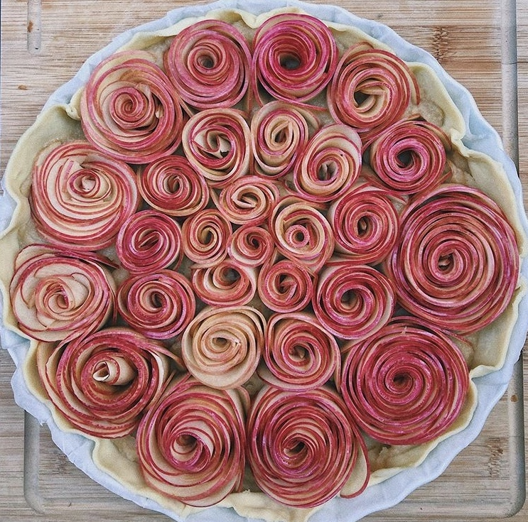
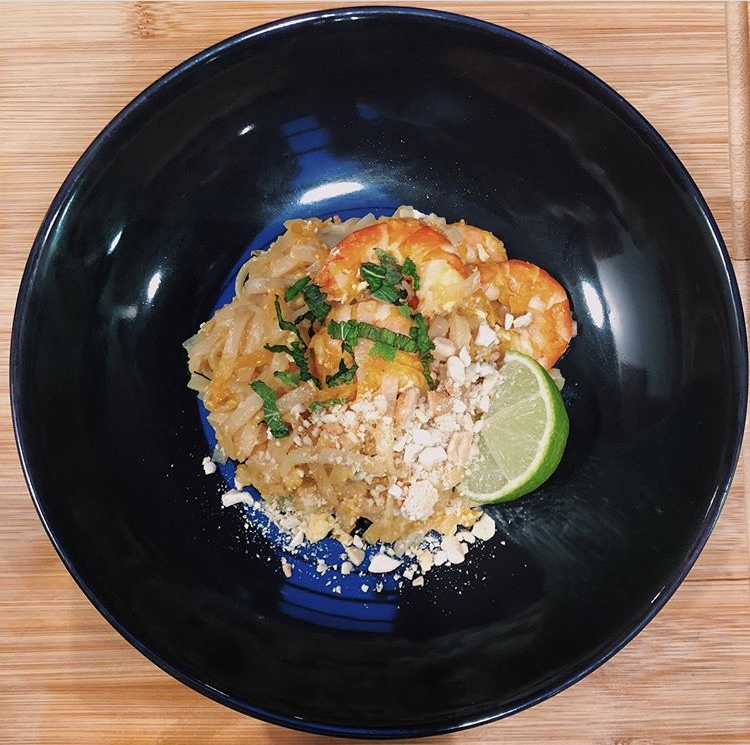
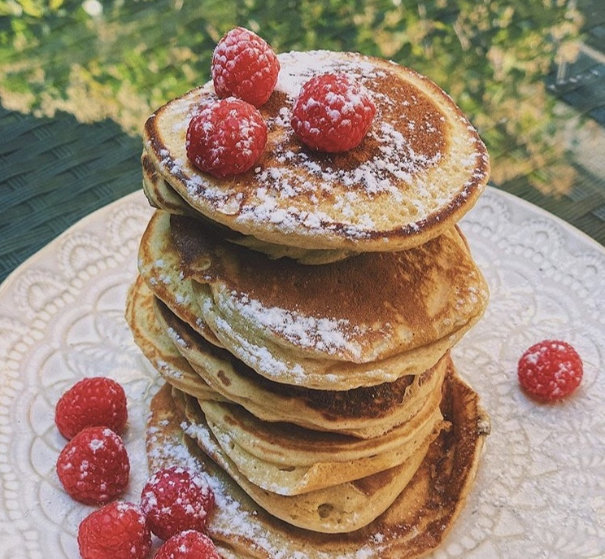

Hello, I'm Juliette

I am currently finishing my Bachelor's degree at EHL, in this page I wished to reveal myself a little more personally that's why it is essentially dedicated to my greatest passion, cooking!
I am currently finishing my Bachelor's degree at EHL, in this page I wished to reveal myself a little more personally that's why it is essentially dedicated to my greatest passion, cooking!
Since I was a little girl I have always been very attracted to gastronomy. Like many children, I was lucky enough to have a grandmother who made delicious cakes and transmitted some of her knowledge to me! I am a very curious person, always looking for a new recipe to try and share with my family and friends and on the lookout for new restaurants that are opening. I think that my epicurean spirit allows me to constantly reinvent my recipes and allows me to find new trendy addresses!
Here are three of my favorite recipes:

The first one is an apple pie a bit revisited especially from the point of view of the assembly I chose to make rosasses with the apple quarters to make it a touch more contemporary.

My second recipe is a Thai shrimp pad thai with cashew nuts, a classic that works every time!

Finally my third recipe is my famous pancakes which is a must for any brunch. My little trick is to whisk the egg whites to make them softer
Onii San is a new Japanese restaurant in the heart of the Marais district in Paris. We come there to taste small plates accompanied by sake. Traditional Japanese cuisine is adorned with creativity, mastered audacity, but also with fusion and diverse inspirations. I strongly recommend
The Cherche Midi is the Italian bistro by excellence! The pasta, sauces, vegetables, meat and fish dishes change every day according to the market, respecting the products and the seasons, offering a varied, fresh, simple and clear cuisine. The service is very professional and welcoming a real culinary journey both in the dining room and on the plates.
In this place you can share a multitude of tapas with your friends: gouda petals with truffle, risottos with tender beef, mozzarella fritters that flow over miles of cheese when you bite into them. At the Mangerie you can enjoy great cocktails made by the barman and enjoy an atypical decor. It is a very convivial and warm place.